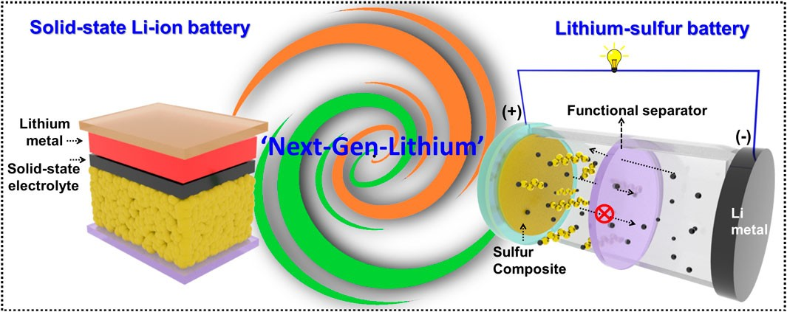
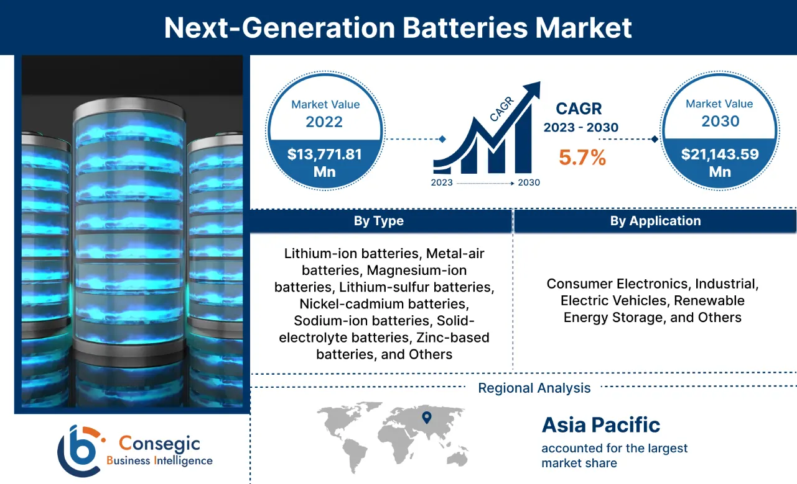
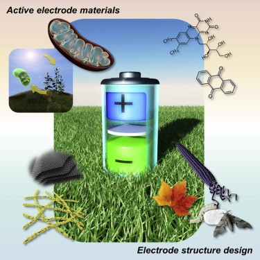

Introduction
The field of battery technology is witnessing an unprecedented evolution, poised to redefine energy storage and consumption. As we look forward to 2030 and beyond, next-gen batteries are set to play a crucial role in various sectors, from electric vehicles to renewable energy systems. In this article, we will explore the underlying science, key players, and the anticipated advancements in battery technology, alongside the challenges and opportunities that lay ahead.
The Science Behind Next-Gen Batteries
The core science behind next-gen batteries involves exploring new materials and configurations. For instance, solid-state batteries, which use solid electrolytes instead of liquid ones, are expected to enhance energy density and safety. This innovation minimizes the risk of leakage and flammability, thereby improving performance under various conditions.

Other promising technologies include lithium-sulfur and sodium-ion batteries, which are intended to overcome the limitations of conventional lithium-ion systems. Lithium-sulfur batteries can offer five times the energy capacity, while sodium-ion batteries utilize more abundant materials, potentially reducing costs significantly. The shift towards these alternatives is not just a matter of performance; it also reflects a growing awareness of resource sustainability and the environmental impact of battery production and disposal.
Key Players in Next-Gen Battery Development
Several companies and research institutions are at the forefront of next-gen battery development. Leading electric vehicle manufacturers are heavily investing in proprietary battery technologies to gain a competitive edge, exemplified by Tesla 's gigafactories that focus on innovative battery designs.
In addition, companies like QuantumScape and Solid Power, Inc. are making waves with their solid-state battery technology, while traditional chemical companies like BASF and Panasonic are pivoting towards advanced battery solutions. Collaboration between these players and academic institutions fosters an ecosystem conducive to groundbreaking advancements. Moreover, government initiatives and funding programs are increasingly supporting research in battery technologies, recognizing their critical role in achieving energy independence and combating climate change. This synergy between private industry and public policy is essential for accelerating the transition to cleaner energy solutions and ensuring that next-gen batteries can meet the demands of a rapidly evolving technological landscape.
Predictions for 2030
As we approach 2030, several predictions about the evolution of battery technology and its implications for industries and society can be made. These forecasts arise from current research trends, market studies, and technological breakthroughs.
Expected Technological Advancements
By 2030, advancements are expected in battery energy density, with many next-gen solutions potentially achieving densities over 400 Wh/kg—significantly higher than traditional lithium-ion batteries. This leap could come alongside faster-charging technologies, allowing vehicles to recharge in minutes instead of hours.
Moreover, improvements in battery lifespan and recycling capabilities are also critical focus areas. The development of batteries that can last over 1 million miles in electric vehicles might become the norm, significantly enhancing their lifecycle and sustainability. Innovations in solid-state batteries, which promise greater safety and efficiency, may also emerge, reducing the risk of fires associated with conventional lithium-ion batteries. These advancements could lead to a paradigm shift in how we think about energy storage, making it not only more efficient but also more environmentally friendly.
Market Growth Projections

The global demand for batteries is expected to surge dramatically, with lithium-ion battery demand projected to grow by approximately 33% annually, reaching around 4.7 TWh by 2030. This growth is primarily driven by the electrification of mobility, particularly in electric vehicles (EVs), which will account for a significant portion of the demand. The overall battery market is anticipated to expand from about $85 billion in 2022 to over $400 billion by 2030, reflecting a five-fold increase across the entire value chain.
Long-Term Predictions: Beyond 2030
Future Battery Technologies on the Horizon
Emerging technologies such as bio-batteries and flow batteries may start to gain traction in specialized applications. Bio-batteries harness organic materials for energy generation, presenting a sustainable alternative for certain niches. Flow batteries, on the other hand, offer scalability and long-duration storage characteristics, making them suitable for large-scale renewable energy applications.

Other potentials include the advent of self-repairing batteries, which could revolutionize the maintenance and longevity of consumer electronics and electric vehicles. These innovative batteries could utilize advanced materials that respond to damage by automatically repairing themselves, thereby extending their lifespan and reducing waste. This technology could also lead to significant cost savings for manufacturers and consumers alike, as fewer replacements would be necessary over time.
Key Drivers of Demand
- Electrification of Mobility: As governments and industries push towards cleaner transportation, the demand for EVs will significantly increase.
- Energy Storage Systems: Battery energy storage systems (BESS) are expected to grow at a compound annual growth rate (CAGR) of 30%, highlighting the need for efficient energy storage solutions in renewable energy applications.
- Sustainability Initiatives: The shift towards sustainable practices will drive innovations in battery recycling and material sourcing, emphasizing the need for a circular economy in battery production.
Challenges to Next-Gen Battery Development
One of the primary challenges is the scalability of new battery technologies. Many next-gen solutions are currently in the prototype phase and need to be economically manufactured at scale to meet market demands.
Additionally, sourcing raw materials for batteries, such as lithium, cobalt, and nickel, poses sustainability concerns and geopolitical issues. Innovative approaches to material sourcing and recycling must be prioritized to ensure a stable supply chain.
Conclusion
As we look towards 2030, next-generation batteries will play a pivotal role in shaping a sustainable energy future. With significant advancements in technology and a strong focus on environmental responsibility, the battery industry is set to undergo transformative changes that will impact various sectors including automotive, consumer electronics, and renewable energy. The collaboration between governments, industries, and researchers will be essential in realizing these ambitious goals.